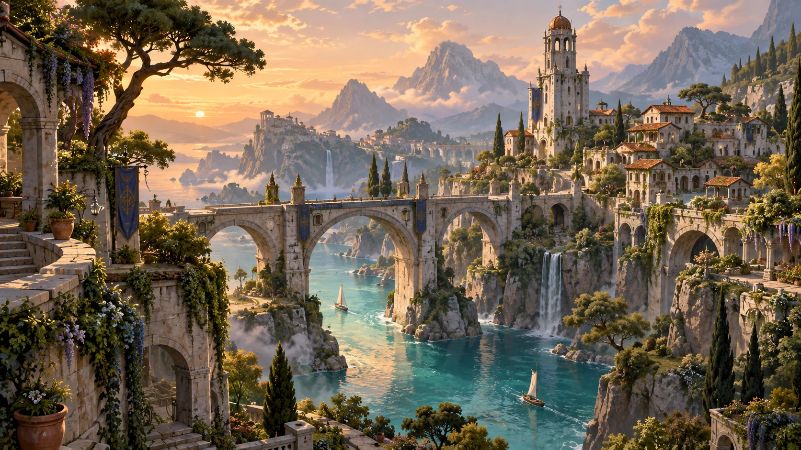
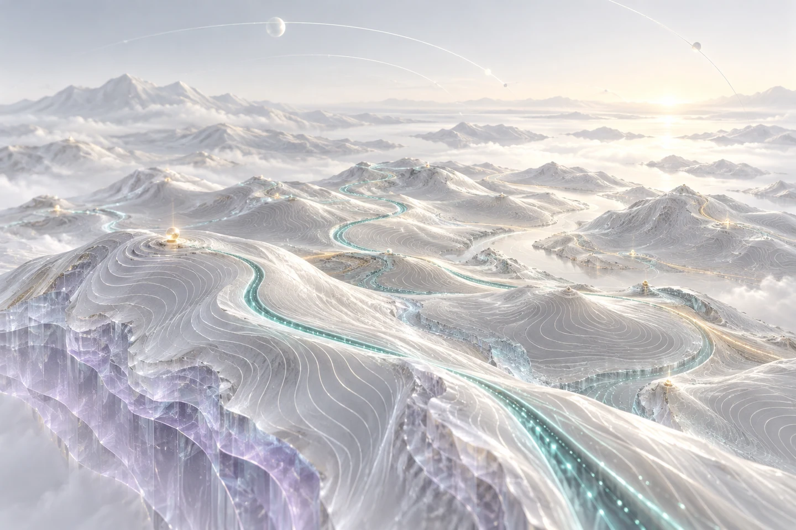
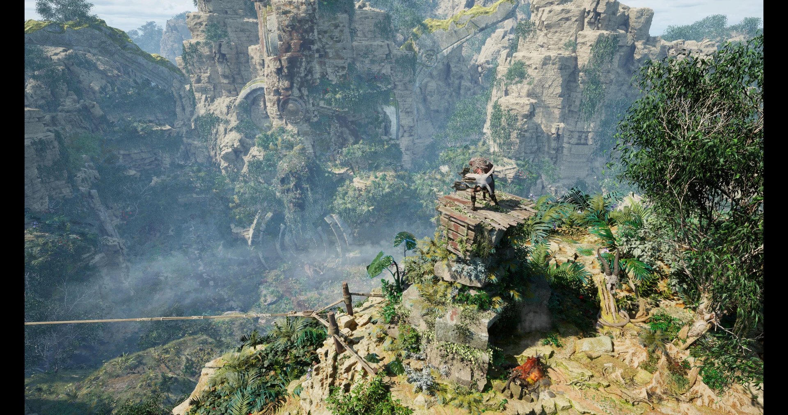
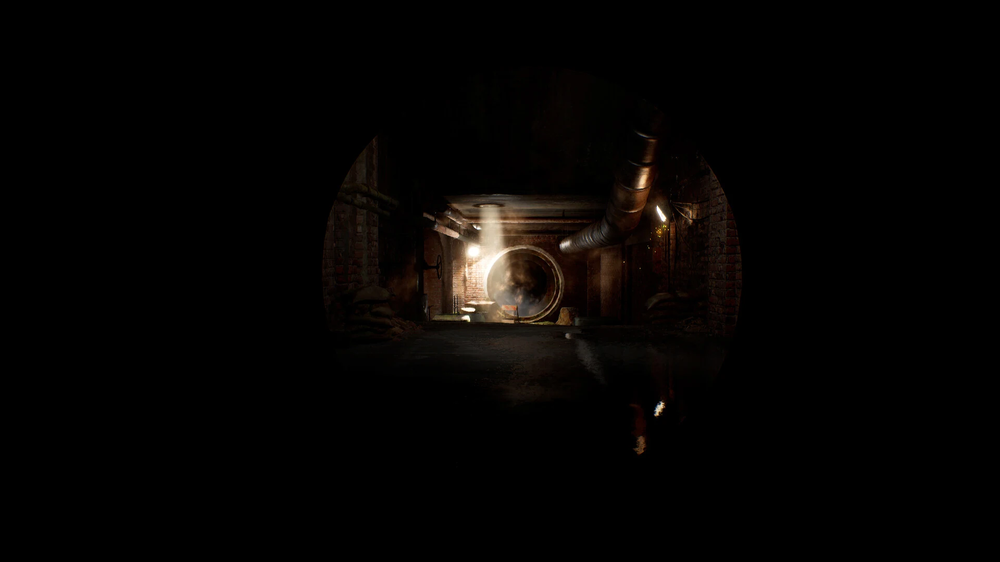
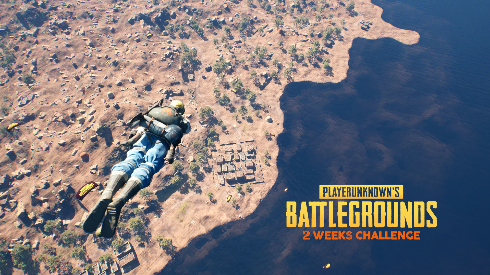

연출용 임시 콘셉트 · 실제 프로젝트 화면 아님
LAUNCHING 01 / 10
NETMARBLE 2006.12 — 2008.12
마구마구
캐주얼 스포츠
자체 엔진 · PC 온라인국내 정식 출시
ART · PLANNING · DEVELOPMENT
on the art
최효재
YIGO. Creative Leader
아트·기획·개발의 언어를 잇는 제작 리더.
상상한 세계를, 경험할 수 있는 공간으로.
환경 아트에서 실시간 기술과 제품 설계까지.
00 / POINT OF VIEW
아트의 의도, 기획의 구조, 기술의 가능성.
서로 다른 언어를 하나의 제작 흐름으로 엮어
사람이 경험할 수 있는 공간을 만듭니다.
01 / PERSONAL WORLDS
CAREER PROJECTS · SELECTED ARTWORKS게임에서 현실의 시뮬레이션까지.
참여한 프로젝트와 직접 설계한 세계를 따라갑니다.
LAUNCHING 01 / 10
NETMARBLE 2006.12 — 2008.12
캐주얼 스포츠

연출용 임시 콘셉트 · 실제 프로젝트 화면 아님LAUNCHING 02 / 10
NETMARBLE 2006.12 — 2009.12
스타일라이즈드 액션 RPG
LAUNCHING 03 / 10
NETMARBLE 2010.01 — 2014.07
리얼 스포츠
LAUNCHING 04 / 10
NETMARBLE 2014.08 — 2016.05
MMORPG
LAUNCHING 05 / 10
SGU 2016.11 — 2019.06
골프 시뮬레이터
LAUNCHING 06 / 10
NTREEV SOFT 2019.07 — 2021.12
스포츠 시뮬레이션
 연출용 임시 콘셉트 · 실제 프로젝트 화면 아님
연출용 임시 콘셉트 · 실제 프로젝트 화면 아님PROJECTS & R&D 07 / 10
GN COMMS 프로젝트 2016.06 — 2016.10
3D 인테리어 프로젝트
연출용 임시 콘셉트 · 실제 프로젝트 화면 아님PROJECTS & R&D 08 / 10
SGU 2018.06 — 2019.06
인터랙티브 VR 월드
 연출용 임시 콘셉트 · 실제 프로젝트 화면 아님
연출용 임시 콘셉트 · 실제 프로젝트 화면 아님PROJECTS & R&D 09 / 10
NTREEV SOFT 2022.01 — 2024.02
전략 시뮬레이션

연출용 임시 콘셉트 · 실제 프로젝트 화면 아님PROJECTS & R&D 10 / 10
MORAI 2024.07 — 2024.12
디지털 트윈
직접 설계한 개인 작품.
스크롤하며 다음 세계로.
 01실제 작품
01실제 작품
MODULAR ENVIRONMENT
Modular Village
반복 가능한 건축 모듈에서 확장 가능한 공간으로. 절차적 생성과 사용자 커스터마이징을 고려한 지중해풍 환경 설계.
Unreal Engine 5 · Vertex Paint · Substrate
캐릭터: Epic Games 무료 Paragon 에셋 · 포트폴리오 목적

02실제 작품PROCEDURAL WORLD
A vertical wilderness
협곡과 유적을 오르내리는 수직 탐험. PCG 기반 식생과 지형 배치로 정글의 밀도와 이동의 리듬을 설계했습니다.
Unreal Engine 5.3 · PCG
자체 모델링 · Megascans 및 Epic Games 리소스 활용
 03실제 작품
03실제 작품
ENVIRONMENT ART
Quiet stories in detail
건축 요소와 가구를 직접 모델링하고 목재·패브릭·도자기 재질을 제작한 클래식 실내 환경입니다.
Unreal Engine 5 · Modeling · PBR
일부 소품: Quixel Megascans

04실제 작품INTERACTIVE LEVEL
Interactive Journey
험준한 지형, 탐험과 이동수단을 중심으로 구성한 인터랙티브 레벨. 오픈월드 어드벤처의 랜드스케이프를 탐구합니다.
Unreal Engine 5.5 · BiomeCore
캐릭터: Epic Games 무료 Paragon 에셋 · 포트폴리오 목적

05실제 작품LEVEL DESIGN STUDY
Two weeks. One world.
2주 일정으로 PUBG Karakin에서 착안한 레벨과 비주얼 콘텐츠를 구성하고, 모션 매칭으로 플레이 가능한 경험을 만들었습니다.
Unreal Engine 5.4 · Motion Matching
개인 레벨 디자인·비주얼 작업
 06실제 작품
06실제 작품
ENVIRONMENT STUDIES
Notes from imagined places
환경에 대한 아이디어를 이미지로 기록한 SketchingIdeas 연작의 첫 번째 공개 묶음입니다.
Environment art · Visual exploration
개인 환경 아트 연작
개인 작품의 제작 범위와 외부 리소스를 함께 표기합니다.
All work on ArtStation ↗FEATURED PROJECT · UNREAL ENGINE 5
모든 조립은 하나의 작은 유닛에서 출발합니다. 이 단위가 반복 가능한 구조의 기준이 됩니다.
절차적 생성과 사용자 커스터마이징을 고려한 건축 모듈. 다양한 장르와 연출에 맞게 조합하고 지속적으로 확장할 수 있는 리소스 구조를 탐구했습니다.
DESIGN & PRODUCTION
Unreal Engine 5 · Vertex Paint · Substrate
Substance Painter · Gaea · 3ds Max · Quixel
최종 조립 단계는 Tier 1 하우스입니다. 캐릭터는 Epic Games 무료 Paragon 에셋을 포트폴리오 목적으로 사용했습니다.
A SHIFT IN PERSPECTIVE
02 / BUILDING WHAT'S NEXT
IN DEVELOPMENTYIGO. / DIGITAL CONTENT PLATFORM
기억을 콘텐츠로.
경험을 제품으로.
CONCEPT · EXPERIENCE · DEVELOPMENT
현재 YIGO.에서 Aelin을 기획·개발하고 있습니다. 개인의 의미 있는 순간과 기억을 디지털 카드로 표현하고, 수집·성장시키는 경험을 설계합니다.
서비스 개념, 사용자 경험, 콘텐츠 구조와 제작·관리 기능을 구체화하고, AI 코딩 에이전트를 개발 보조로 활용해 웹 앱을 구현·개선합니다.
기획·개발 진행 중03 / EXPERIENCE
Full resume ↗게임 속 세계에서 현실을 다루는 시뮬레이션까지.
환경 제작과 팀 리딩의 경험을 이어왔습니다.
Unreal Engine 5 기반 디지털 트윈에서 자율주행 시스템용 3D 그래픽스와 국내 주요 도시를 포함한 대규모 랜드스케이프를 담당했습니다. 인지 센서 연동 SimReady 설계와 최적화를 통해 시뮬레이션 오차 범위를 줄이는 작업을 수행했으며, 글로벌 확장을 고려한 프로덕트 개발에 참여했습니다.
Project D는 모바일 덱 전략 시뮬레이션 프로젝트입니다. Unreal Engine 5와 Unity HDRP로 프로토타입을 제작한 뒤 Unity URP 스타일라이즈드 파이프라인으로 전환했습니다. Gaea·World Machine 등으로 제작 방식을 연구하고 덱 배경 이미지, 전투 레벨, 인터페이스 등 3D 배경 그래픽 전반에 참여했습니다. 회사 사정으로 종료된 프로젝트입니다.
프로야구 H3·H2에서는 Unity HDRP 기반 인터페이스 배경 스틸과 아이콘, 경기장 모델을 제작했습니다. 국내 모바일 상용화 프로젝트입니다.
홈필드는 가정용 VR 연동을 구상한 모바일 골프 시뮬레이터입니다. SpeedTree·World Machine으로 골프 코스 환경을 만들고 Unity 모바일 버전으로 국내 상용화했습니다. 하드웨어 예산 문제로 가정용 VR 연동은 진행되지 않았습니다. Home VR은 스포츠·놀이 콘텐츠 월드를 Unreal Engine 4로 프로토타이핑한 연구 프로젝트이며 회사 사정으로 종료됐습니다.
그래픽 디자이너가 사용하기 쉬운 Unreal Engine 4 Blueprint 기반 인테리어 커스터마이징 도구를 단기 제작했습니다. 국내 인테리어 업체와 계약한 프로젝트이며, 출시 여부는 별도로 확인이 필요합니다.
이데아에서는 Unity 기반 3D 배경 프랍과 월드 레벨을 제작했습니다. 국내 모바일 상용화 작품입니다.
마구더리얼에서는 경기장 모델링, Unreal Engine 3 머티리얼 제작·최적화, Matinee 기반 이벤트 연출을 담당했습니다. 국내 및 대만 온라인 상용화 작품입니다.
오즈 크로니클에서는 Gamebryo 기반 배경 모듈·프랍·레벨을, 마구마구에서는 자체 엔진 기반 3D 배경 모델을 제작했습니다. 두 작품은 국내 온라인 상용화로 이력서에 기록되어 있습니다.
PRODUCTION TOOLKIT & PRACTICE
엔진·실시간 제작 Unreal Engine 3/4/5 · Unity HDRP/URP
환경·3D·머티리얼 3ds Max · ZBrush · Marvelous Designer · Substance Painter/Sampler/Designer · Quixel Mixer
지형·월드·프로세스 Gaea · World Machine · World Creator · SpeedTree · SimReady · 디지털 트윈 · PCG 연구
리딩·협업 파이프라인 및 제작 기준 정리 · 리소스 관리 · 검수 절차 · 일정·이슈 공유 · Notion · Jira · Confluence
경력·상용화 상태는 제공된 이력서 기준입니다. 회사 프로젝트의 실제 이미지는 공개 가능한 자료가 제공되면 추가합니다.
04 / AI IN PRACTICE
HUMAN DIRECTION. AI-ASSISTED PRODUCTION.판단의 중심은 사람에게.
제작의 가능성은 더 넓게.
SOURCE
경력 문서와 작품 자료에서 확인된 사실, 공개 상태, 보완할 내용을 정리합니다.
경력 문서 / 실제 작품NARRATIVE
개인 작품과 프로젝트, 제작 관점을 방문자가 따라갈 수 있는 이야기로 엮습니다.
페이지 흐름 / 스토리보드BUILD
AI 코딩 에이전트와 함께 이미지, 영상, 탐색 동작을 하나의 웹 경험으로 만듭니다.
인터랙션 / 프로토타입REVIEW
데스크톱과 모바일에서 의도가 전달되는지 살피고 자료와 표현을 개선합니다.
화면 검토 / 다음 개선사실 관계와 공개 범위, 연출 방향은 직접 정합니다.
AI는 그 의도를 확장하는 제작 도구로 활용합니다.
05 / THE PERSON BEHIND THE WORLDS
CHOI HYOJAE · SEOULJAY. / ON THE ART
아트·기획·개발의 언어를
잇는 제작 리더입니다.
상용 게임, VR 콘텐츠, 디지털 트윈과 실시간 환경 제작을 경험했습니다. 분야마다 다른 의도와 제약을 제작 기준과 흐름으로 연결하고, 팀이 같은 목표를 향해 움직이도록 돕습니다.
현재 YIGO.에서 Creative Leader로서 Aelin을 기획·개발하고 있습니다. 개인 작품에서는 공간과 플레이의 관계를 직접 설계하고, 제작 도구와 방법의 가능성을 탐구합니다.
Experience & resume ↗THERE'S MORE TO EXPLORE